目标检测
计算机视觉的四种基本任务是图像分类，图像定位，物体检测，物体分割。
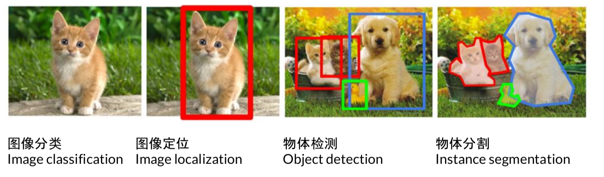
其具体的任务如上图所示。
实际上大部分（甚至所有）的CV/NLP/Robotics任务都是两个基本机器学习问题：
Data classification (离散的，分类问题)：the output variable takes class labels
Data regression (连续的，回归问题)：the output variable takes continuous values.
一、目标检测的评价指标
1. mPA
这里首先介绍几个常见的模型评价术语，现在假设我们的分类目标只有两类，计为正例（positive）和负例（negtive）分别是：
1）True positives(TP): 被正确地划分为正例的个数，即实际为正例且被分类器划分为正例的实例数（样本数）；
2）False positives(FP): 被错误地划分为正例的个数，即实际为负例但被分类器划分为正例的实例数；
3）False negatives(FN):被错误地划分为负例的个数，即实际为正例但被分类器划分为负例的实例数；
4）True negatives(TN): 被正确地划分为负例的个数，即实际为负例且被分类器划分为负例的实例数。
P代表precision即准确率，计算公式为 预测样本中实际正样本数 / 所有的正样本数 即 precision=TP/（TP+FP）；
R代表recall 即召回率，计算公式为 预测样本中实际正样本数 / 预测的样本数即 Recall=TP/(TP+FN)=TP/P
一般来说，precision和recall是鱼与熊掌的关系，往往召回率越高，准确率越低
AP 即 Average Precision即平均精确度
mAP 即 Mean Average Precision即平均AP值，是对多个验证集个体求平均AP值，作为 object dection中衡量检测精度的指标。
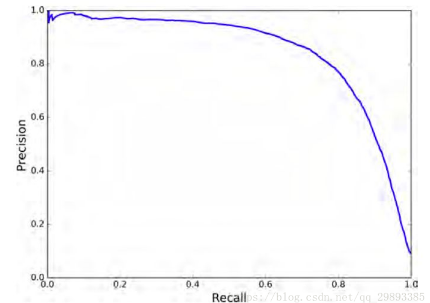
P-R曲线即 以 precision 和 recall 作为 纵、横轴坐标 的二维曲线。通过选取不同阈值时对应的精度和召回率画出
总体趋势，精度越高，召回越低，当召回达到1时，对应概率分数最低的正样本，这个时候正样本数量除以所有大于等于该阈值的样本数量就是最低的精度值。
另外，P-R曲线围起来的面积就是AP值，通常来说一个越好的分类器，AP值越高
在目标检测中，每一类都可以根据 recall 和 precision绘制P-R曲线，AP就是该曲线下的面积，mAP就是所有类AP的平均值。
2. IOU()交并比
IOU 即交并比 即 Intersection-over-Union，是目标检测中使用的一个概念，是一种测量在特定数据集中检测相应物体准确度的一个标准。
IOU表示了产生的候选框（candidate bound）与原标记框（ground truth bound）的交叠率或者说重叠度，也就是它们的交集与并集的比值。相关度越高该值。最理想情况是完全重叠，即比值为1。
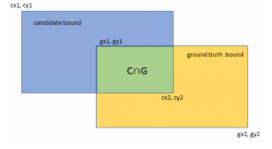
计算公式如下：
$$
IoU=\frac{\operatorname{area}(C)\cap\operatorname{area }(G)}{\operatorname{area}(C)\cup \operatorname{area}(G)}
$$
3. 速度
除了检测准确度，目标检测算法的另外一个重要性能指标是速度，只有速度快，才能实现实时检测，这对一些应用场景极其重要。评估速度的常用指标是每秒帧率（Frame Per Second，FPS），即每秒内可以处理的图片数量。当然要对比FPS，你需要在同一硬件上进行。另外也可以使用处理一张图片所需时间来评估检测速度，时间越短，速度越快。
二、经典方法
Deformable parts model （Object Detection with Discriminatively Trained Part Based Models）
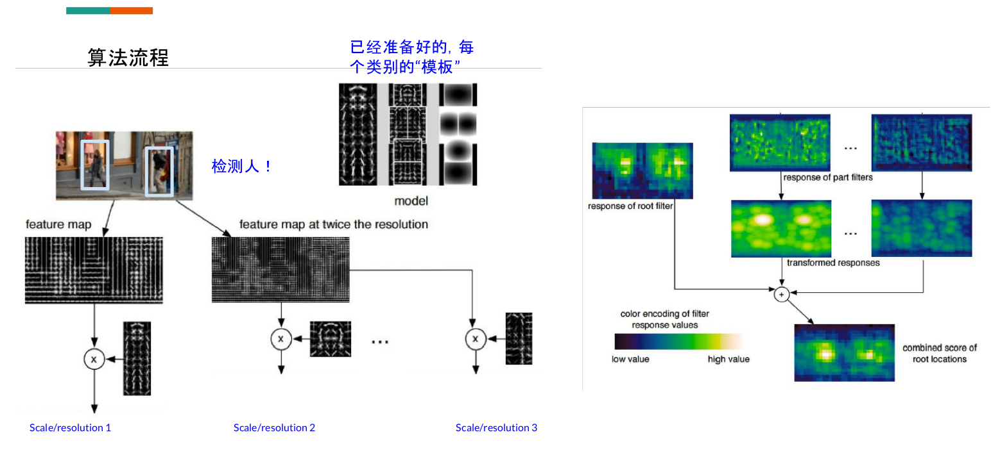
在这里，feature map用传统的方法计算，上图很明显计算的是灰度的梯度特征，把图变大几倍就是muti-scale。model的模板是给好的。右边是热力响应图。把不同尺度的融合在一起产生一个综合的。每一个成就窗口检测出来都会和模板中的所有类别比较一下，看对哪一类的响应最大，这样子的算法必定计算起来会很慢。这样子计算也会得到很多框，而将准确度不高的框删除用的方法就是NMS。
hard mining的概念
在deep learning时代处理这个比较经典的方法就在这篇论文中用到的：Training Region-based Object Detectors with Online Hard Example Mining在一个mini-batch 里,能让classifier 混淆的sample (RoI outputs),标记成hard example, 用到下一轮的训练中。
三、NMS（非极大抑制算法）
NMS(Non Maximum Suppression)，又名非极大值抑制，是目标检测框架中的后处理模块，主要用于删除高度冗余的bbox，先用图示直观看看NMS的工作机制：
从上述可视化的结果可以看出，在目标检测过程中，对于每个obj在检测的时候会产生多个bbox，NMS本质就是对每个obj的多个bbox去冗余，得到最终的检测结果．
NMS用于剔除图像中检出的冗余bbox，标准NMS的具体做法为：
step-1：将所有检出的output_bbox按cls score划分（如pascal voc分20个类，也即将output_bbox按照其对应的cls score划分为21个集合，1个bg类，只不过bg类就没必要做NMS而已）；
step-2：在每个集合内根据各个bbox的cls score做降序排列，得到一个降序的list_k；
step-3：从list_k中top1 cls score开始，计算该bbox_x与list中其他bbox_y的IoU，若IoU大于阈值T，则剔除该bbox_y，最终保留bbox_x，从list_k中取出；
step-4：选择list_k中top2 cls score(步骤3取出top 1 bbox_x后，原list_k中的top 2就相当于现list_k中的top 1了，但如果step-3中剔除的bbox_y刚好是原list_k中的top 2，就依次找top 3即可，理解这么个意思就行)，重复step-3中的迭代操作，直至list_k中所有bbox都完成筛选；
step-5：对每个集合的list_k，重复step-3、4中的迭代操作，直至所有list_k都完成筛选；
可以结合下图理解：
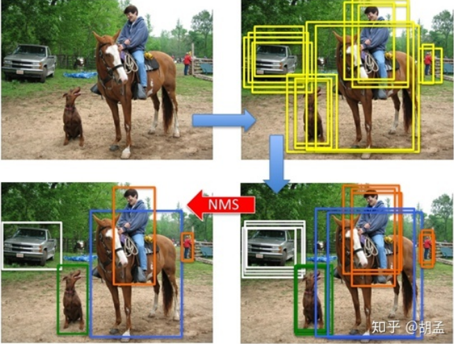
想更好的理解可以参考这篇中的结合代码的讲解：
四、回顾CNN方法与深度学习要素
CNN方法回顾
一个CNN网络基本如下:
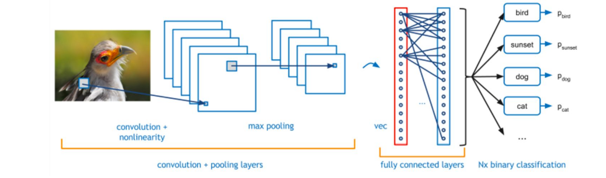
在监督学习中,损失(loss) 是一个重要的概念。在整个数据集中的 loss为：
$$
L(W)=\frac{1}{|D|} \sum_{i}^{|D|} f_{W}\left(X^{(i)}\right)+\lambda r(W)
$$
但是通常计算整个数据集是不现实的，所以采用的方法是取一个mini-batch。
$$
L(W) \approx(\frac{1}{N} \sum_{i}^{N} f_{W}\left(X^{(i)}\right)+\lambda r(W)
$$
其中N就代表的mini-batch，通常可以取2,4,8等，而后面的哪一项是正则化，为了提高模型的泛化能力，避免过拟合而加上的。
参数的更新是使用梯度下降的方法。
$$
\begin{array}{c}{V_{t+1}=\mu V_{t}-\alpha \nabla L\left(W_{t}\right)} \\ {W_{t+1}=W_{t}+V_{t+1}}\end{array}
$$
$\mu$防止波动太快，也叫momentum，$\alpha$就是learningrate，$\lambda$也叫weightdecay
在深度学习中loss也有很多，如下图所示：
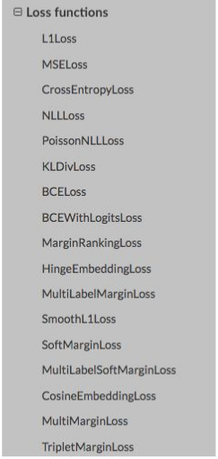
在目标检测中用的多还是CrossEntropyLoss。关于各个loss的详细讲解可以参考博主另一篇文章机器学习的loss。
深度学习三要素
- 首先关注模型:用了什么结构?
- 在什么数据集上做的?实验效果如何?
- 算法
a. 训练过程:loss, sampling, 梯度
b. 测试过程:multi-scale, NMS
五、RCNN家族算法
如何检测出下图中的物体类别和位置?
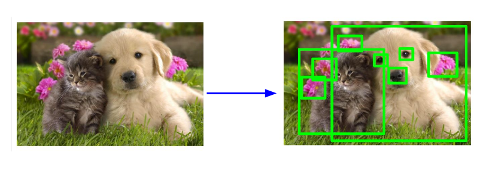
解决方案:
Step 1 现产生一些可能含有物体的目标框(region proposal / bounding box)
Step 2 对于给定的目标框做分类。
对于Step 1如果生成目标框呢?
- 传统方法:selective search (来自论文Uijlings et al, “Selective Search for Object Recognition”, IJCV 2013)
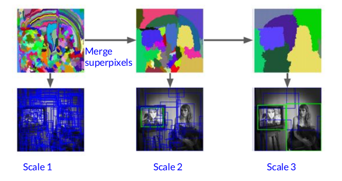
这是一种自下而上(bottom-up segmentation从像素级至上)的方法:
它是基于SLIC算法,先将图像分割成很多小的区域(superpixel), 然后根据小区域之间的相似程度,融合。最后结合 各个尺度上的结果,产生很多region proposals.
深度学习方法，使用一个网络来生成（RPN网络）
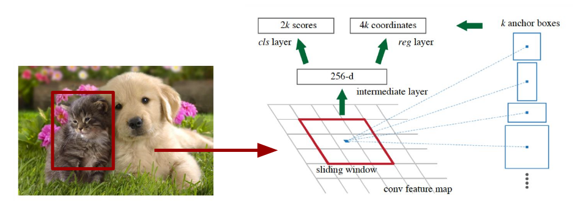
上图为在NIPS 2015上发表的Faster-RCNN中的RPN（Region proposal network）结构。
在feature map上的每一个点,预先设定好固定大小、和比例的”模板框” (template, anchor), 和真值(ground truth)做比较,得出loss.
损失函数的公式为：
$$
L\left(\left\{p_{i}\right\},\left\{t_{i}\right\}\right)=\frac{1}{N_{c l s}} \sum_{i} L_{c l s}\left(p_{i}, p_{i}^{}\right)+\lambda \frac{1}{N_{r e g}} \sum_{i}\left(p_{i}^{}\right) \operatorname{reg}\left(t_{i}, t_{i}^{*}\right)
$$
在这个loss函数中，前面一项是计算分类的loss，后边是计算回归框的loss。
$p_i$是第i个anchor是否含有物体的概率，范围为0-1，$p_i^*$是真值。$t_i$是第i个anchor的预测位置=$[x_1,x_1,y_1,y_2]$
第二项乘以$p_i^$是为了确保当前检测出来的是有物体的，没有物体时，自然不会进行框的位置回归。$t_i$的计算方式如下：
$$
t_{x}=\left(x-x_{a}\right) / w_{a}, t_{y}=\left(y-y_{a}\right) / h_{a}, \quad t_{w}=\log \left(w / w_{a}\right), t_{h}=\log \left(h / h_{a}\right) \\ t_{x}^{}=\left(x^{}-x_{a}\right) / w_{a}, t_{y}^{}=\left(y^{}-y_{a}\right) / h_{a}, \quad t_{w}^{}=\log \left(w^{} / w_{a}\right), t_{h}^{}=\log \left(h^{*} / h_{a}\right)
$$
其实是预测差值。$x-x_a$(anchorbox位置)，$x$是新的绝对位置，$t_x$是偏移量。
cls（分类）和reg（回归）的loss如下：
$L_{lcs}$:cross-entropy loss
$L_{reg}$: smoothing l1 loss
$$
\begin{array}{l}{\qquad L_{\text { loc }}\left(t^{u}, v\right)=\sum_{i \in\{x, y, w, h\}} \operatorname{smooth}_{L_{1}}\left(t_{i}^{u}-v_{i}\right)} \\ {\text { in which }} \\ {\qquad \operatorname{smooth}_{L_{1}}(x)=\left\{\begin{array}{ll}{0.5 x^{2}} & {\text { if }|x|<1} \\ {|x|-0.5} & {\text { otherwise }}\end{array}\right.}\end{array}
$$
RCNN家族的方法如下：
RCNN
Fast-RCNN
Faster-RCNN (这个工作是大部分流行方法的基石 )
FPN
RetinaNet
Mask-RCNN
RCNN
……
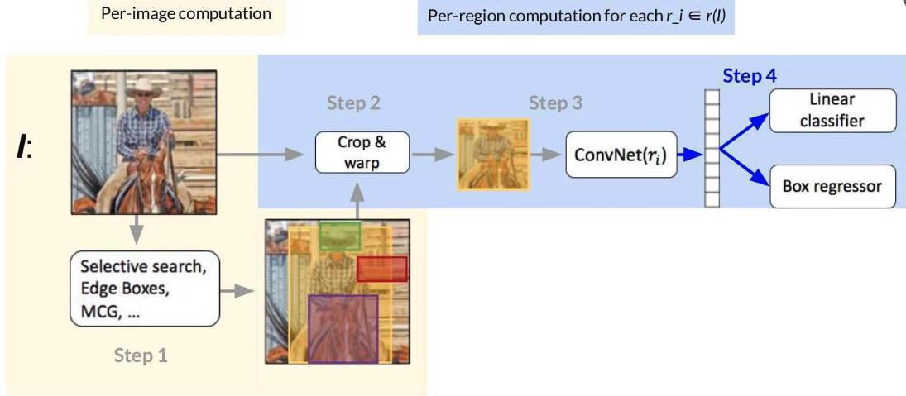
Step 1
Use an off-the-shelf region/object/detection proposal algorithm (~2k proposals per image)
Step 2
Crop and warp each proposal image window to obtain a fixed-size network input
Step 3
Forward propagate the fixed-size network input to get a feature representation
Step 4
按照之前定义的loss 计算即可L_cls = p* Log p, l_reg = smooth_l1
RCNN (Region CNN) 的瓶颈：在第三步时，计算ConvNet(r_i)时，对于每一个区域都要计算feature,~2000的区域,计算量很大
Fast RCNN
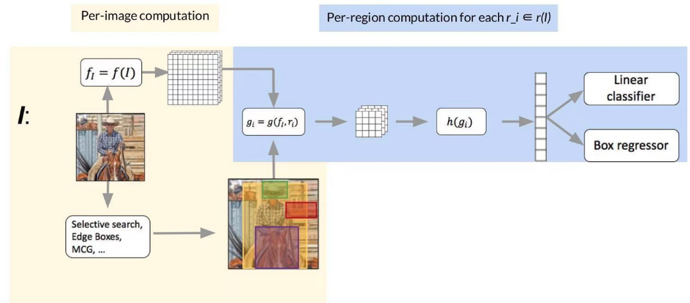
和RCNN比,有何区别？
区别1: FCN提取整个图片的feature
区别2: RoI pooling* 从feature map里截。取各个小区域的feature (节省了计算量).
RoI pooling 的出现,让我们能用任意大小的图像作为输入,总能产生固定大小的输出，RoI layer的BP计算详见Fast RCNN paper。随着技术的发展,RoI-pooling也有各种各样的变种，有兴趣可以下来搜一下。
Fast RCNN的瓶颈其实在于第一步：Use an off-the-shelf region/object/detection proposal algorithm (~2k proposals per image) Region proposals have very poor recall (ok for PASCAL VOC, major bottleneck for COCO) Also, they can be slow
Faster RCNN
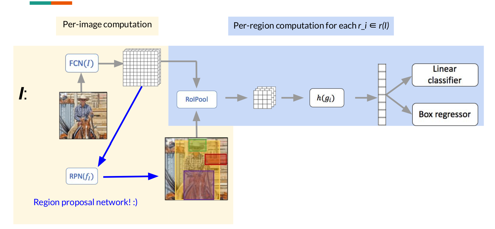
其他的都不变，就是将Fast RCNN讲的局限的地方变成由一个神经网络来生成，RCNN和Fast RCNN实际上都还是用的selective search的方法。所以Faster RCNN的pipeline如下图所示
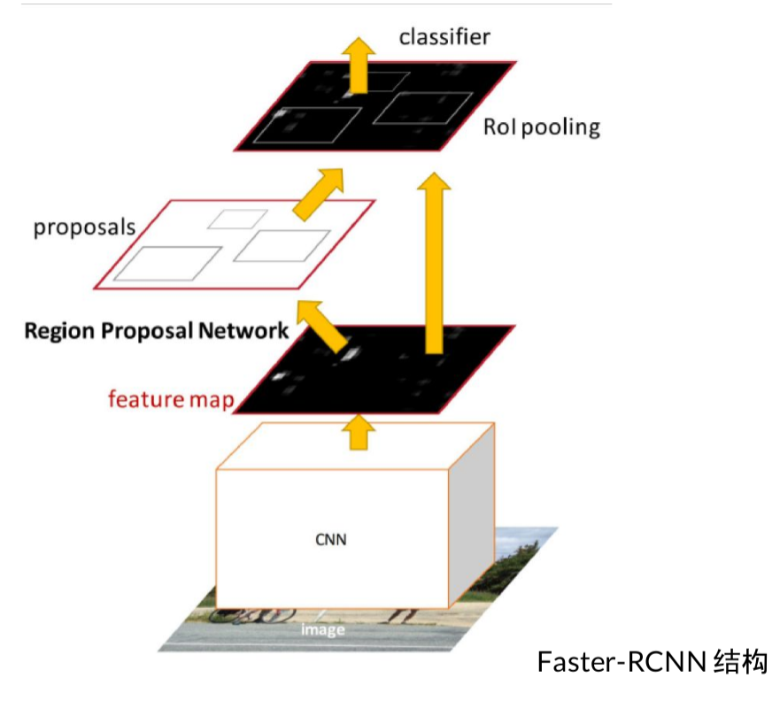
Feature pyramid network (FPN)
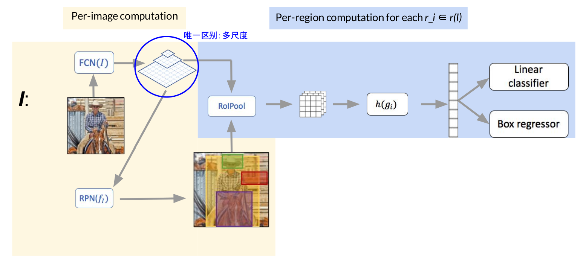
唯一与Faster RCNN的区别就是多尺度的提取了特征图
RFCN (Region-based fully convolutional networks)
提出的背景:之前的方法每个区域都需要一个子网 络来计算loss.
这个工作:
- Feature map是考虑到位置的(position-sensitive score map)。
- 节省了很多计算量:完全卷积结构,共用一个 input image
- 解决了检测问题其实是跟位置有关的。
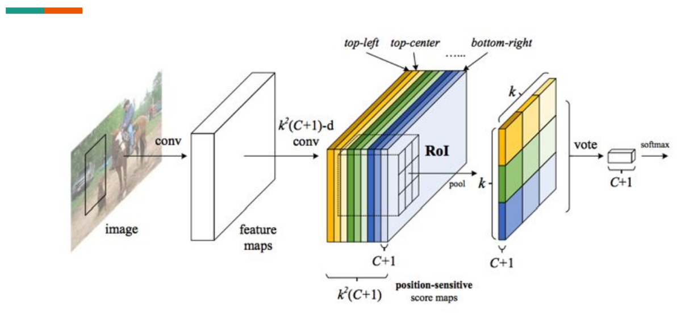
每个颜色代表不同的位置 选择区域。
The bank of k x k score maps correspond to a k x k spatial grid describing relative positions.
例如,有一个 region proposal, 我们要检测,人,这一类:
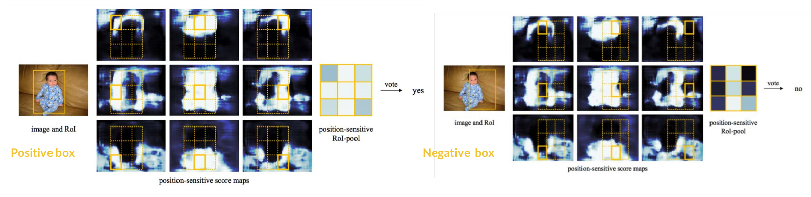
Mask RCNN
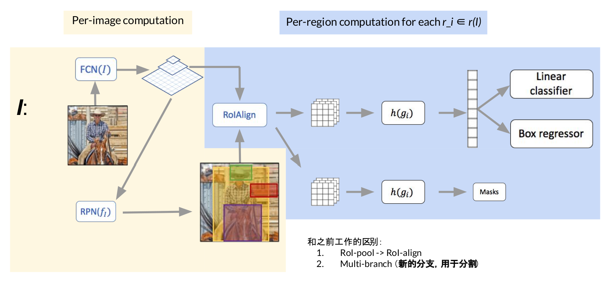
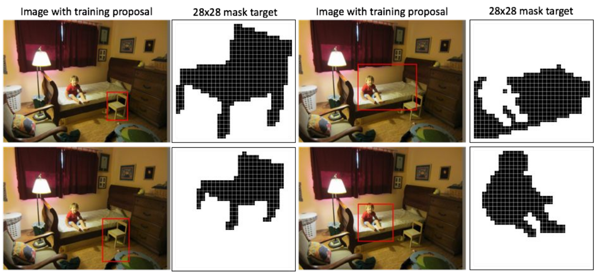
上图是分割任务
以上方法的联系
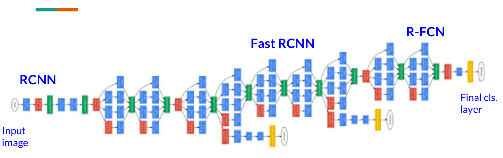
六、物体检测领域前沿知识
以ECCV 2018为例子
值得关注的论文：
Acquisition of Localization Confidence for Accurate Object Detection
Revisiting RCNN: On Awakening the Classification Power of Faster RCNN
DetNet: A Backbone network for Object Detection
Learning Region Features for Object Detection (submit to ECCV 2018)
Pseudo Mask Augmented Object Detection
Deep Regionlets for Object Detection
CornerNet: Detecting Objects as Paired Keypoints
其中Acquisition of Localization Confidence for Accurate Object Detection这篇论文的idea非常有意思
Acquisition of Localization Confidence for Accurate Object Detection
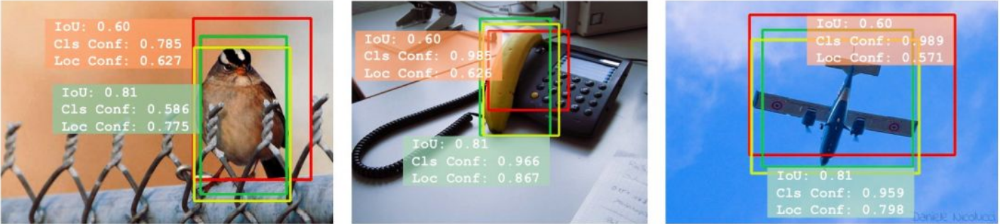
黄色是真值,红色和绿色是预测结果
根据NMS,和confidence score, 选择红的还是黄的？按照之前用的额NMS方法其实在这里用的是cls的confidence来进行比较选择应该删除掉的框，所以按照以前的NMS这里应该删除掉绿色的框。但是之后在算评价指标mPA的时候，使用IoU来进行计算，所以显然留下的框的IoU不高，会导致评价的时候结果不理想。所以这篇论文的motivation就是这个，训练出一个NetWork使之能预测出IoU的值，称之为localization confidence，这个应该为NMS阶段参考的排序。
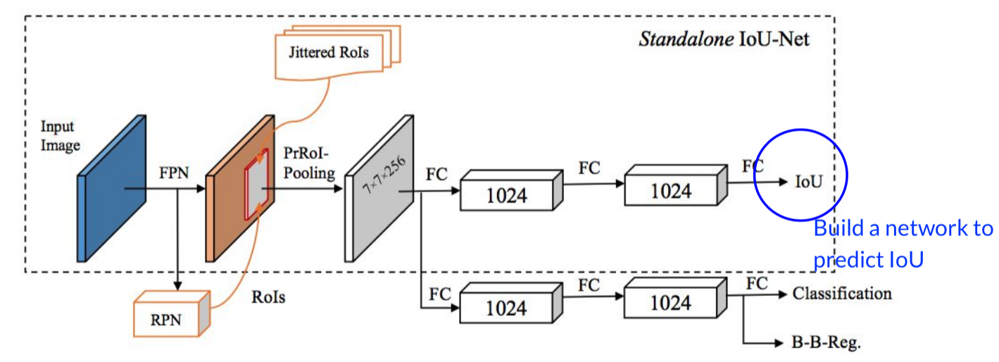
Misaligned classification and localization accuracy：
How to solve it? Build a network to predict IoU! —> IoU-guided NMS why? since the mAP is measured by IOU。
一些思考
下一阶段物体检测领域可以做的有：
1、联合训练（Faster RCNN最初的时候RPN和detection是分开train的，现在都是End-toEnd）
2、在网络中引入各种监督信号,以用来 检测各个尺度上的物体，网络的前几层适合用来检测小的物体，后面的网络是大的物体。
解决多尺度的问题在网络中加入监督信号有一个很典型的网络：Stacked-Hourglass Architecture（最初提出是为了估计2D pose）
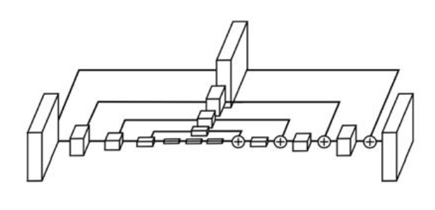
从图中可以看出：是使用模块进行网络设计，先降采样,再升采样的全卷积结构，跳级结构辅助升采样，中继监督训练。关于这个结构的详细解读可以参考博客：Stacked Hourglass算法详解
在物体检测方面，还有一类是直接利用anchor 做detection的方法，也叫做one-stage detector，比如SSD，YOLO（实验室的项目，师兄就在各种魔改SSD部署在板子上，YOLO在做过貌似被放弃了233333）